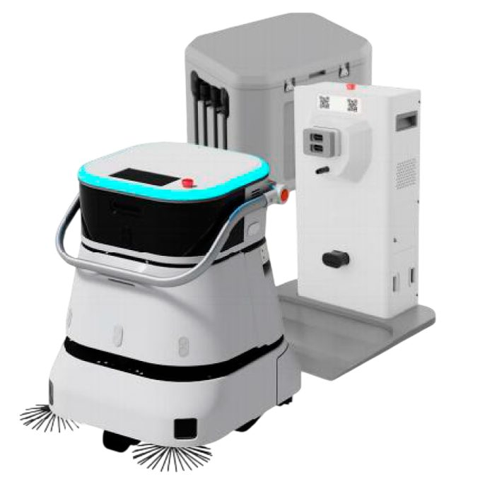
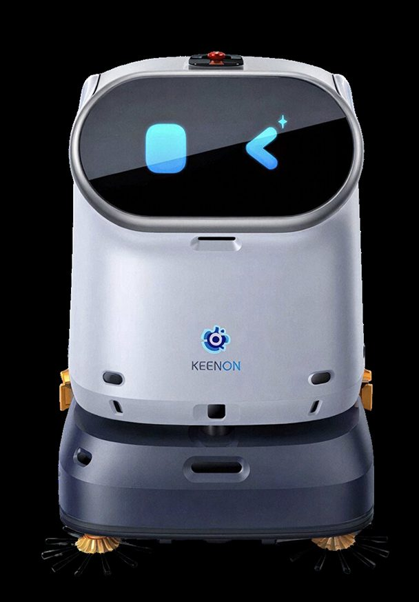
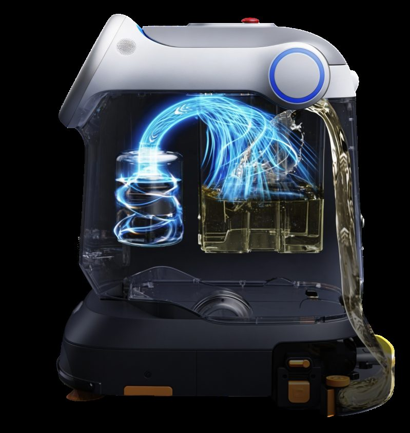
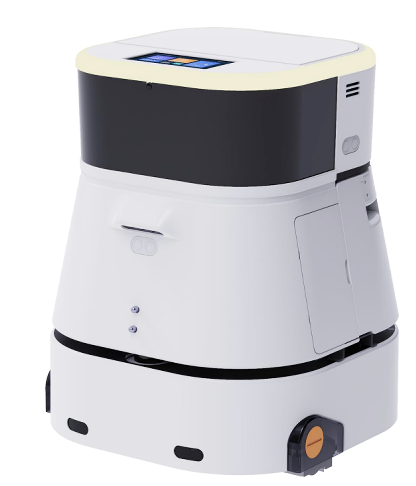
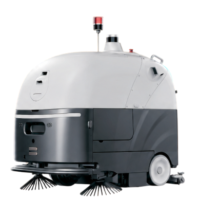
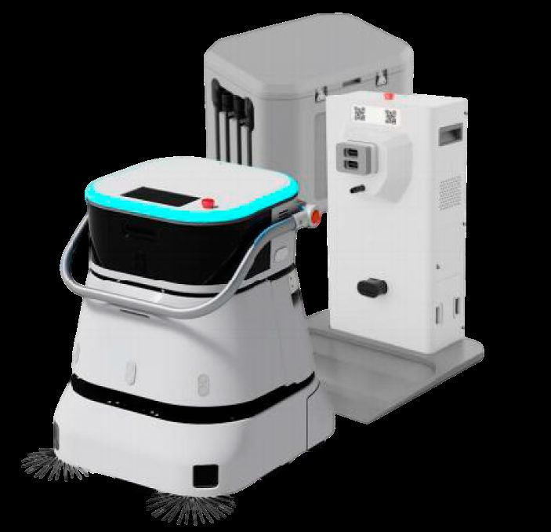
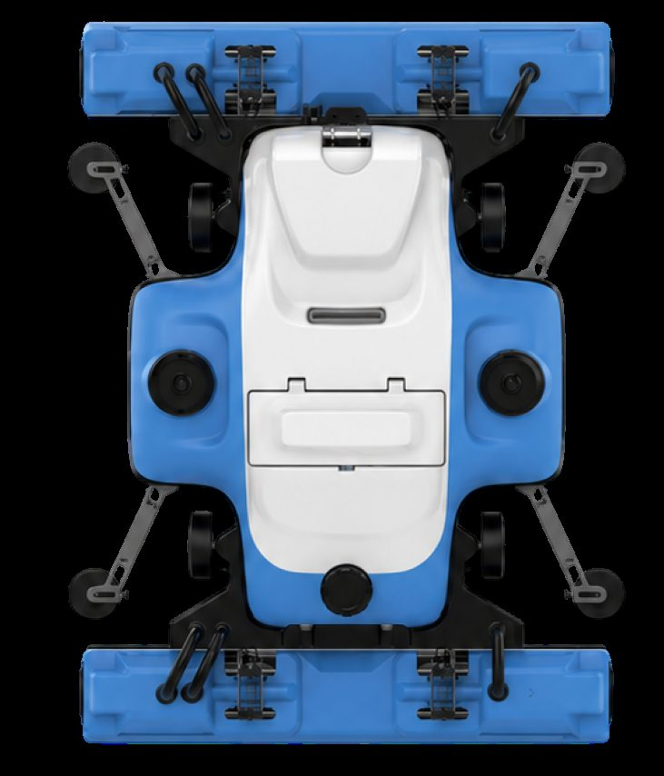
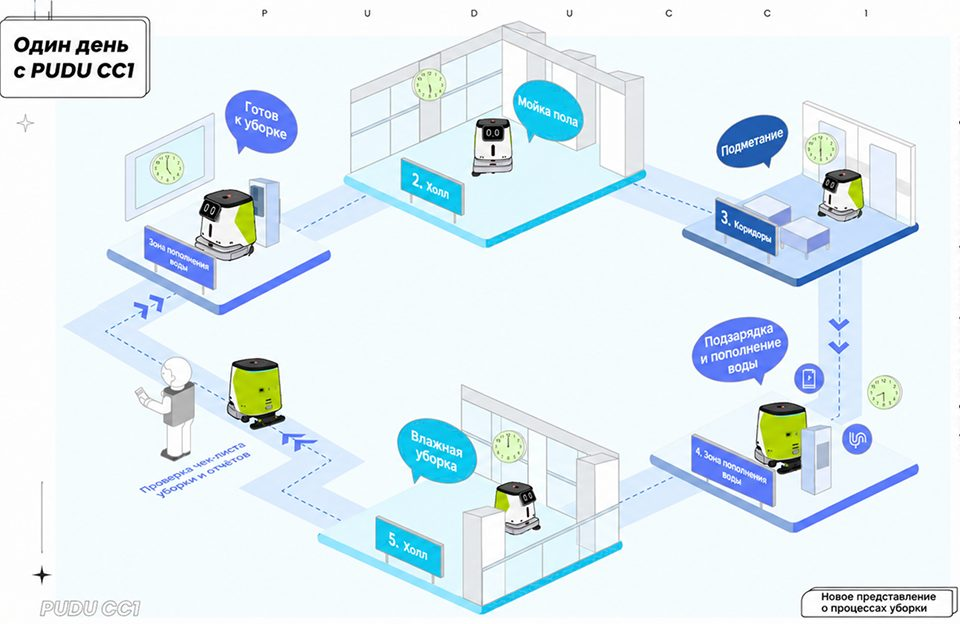

Роботы-уборщики и поломоечные машины для бизнеса
Робот-уборщик выполняет ежедневную уборку больших площадей без участия оператора: подметает, моет пол, собирает пыль и высушивает покрытие за один проход. АТМ АЛЬЯНС поставляет промышленные роботы-пылесосы и поломоечные машины для торговых центров, складов, аэропортов, отелей и бизнес-центров. Модель подбирается под площадь объекта и тип напольного покрытия, также АТМ АЛЬЯНС предоставляет услуги по пусконаладочным работам и обучению персонала. Робот-полотер для влажной уборки работает по заданному маршруту и расписанию, как в ночное время, так и в часы наибольшей проходимости.

9 моделей: выберите по объекту и параметрам
Новый блок: фильтр и карточки Хит
Хит
Для ТЦKeenon Cleanbot C40
школы


Площадь, покрытие, планировка, график: подберём модель и число машин
Для 5 000 м² с ночным окном в 6 часов достаточно одной машины, для 15 000 м² нужны несколько единиц или круглосуточный цикл с док-станцией.
Подобрать модель
Для складов

Цены «от» условные и заполняются клиентом. Точная сумма в коммерческом предложении зависит от комплектации: док-станция, мобильный бак, модуль для ковров, запасные щётки.
Модели и бренды роботов-уборщиков
Блок: таблица характеристикВ каталоге представлены серийные модели производителей Pudu, Keenon (линейка KLEENBOT), Viggo и Linkong. Под разные задачи подбирается своя техника: для ровных гладких полов, для коврового покрытия, для мойки фасадного остекления.
| Модель | Тип уборки | Основное применение |
|---|---|---|
| PUDU CC1 | Мойка, подметание, вакуумная уборка, сухая протирка | Бизнес-центры, ритейл, отели, рестораны |
| KLEENBOT C40 | Мойка, подметание, вакуумная уборка, протирка | Торговые центры, супермаркеты, школы, офисы |
| KLEENBOT C30 | Влажная и сухая уборка | Помещения средней площади |
| PUDU MT1 VAC | Подметание и вакуумная уборка | Открытые зоны, ковровые покрытия, фуд-корты |
| VIGGO SC80P | Сбор пыли и мелкого мусора/Влажная уборка | Склады, производства, большие залы |
| Робот-уборщик C50 | Уборка твердых покрытий | Подземные парковки |
| LINKONG K3 | Мойка остекления | Стеклянные фасады и витражи |
| Робот-уборщик C20 | Влажная и сухая уборка | Офисы, небольшие залы |
| Робот-уборщик S11 | Влажная и сухая уборка | Коммерческие помещения |
Сравнение моделей по параметрам
Новый блок: сравнение| Модель | Производительность | Баки, автономность | Шум | Цена от |
|---|---|---|---|---|
| Pudu CC1 | 700-1 000 м²/ч | 15 + 15 л, 5 ч мойки, 9 ч протирки | менее 70 дБ | N NNN NNN ₽ |
| Keenon C40 | до 1 100 м²/ч | 16 + 14 л, 5 ч мойки, 12 ч подметания | дБ | N NNN NNN ₽ |
| Kleenbot C30 | м²/ч | л, ч | дБ | N NNN NNN ₽ |
| Pudu MT1 VAC | м²/ч | л, ч | дБ | N NNN NNN ₽ |
| Viggo SC80P | м²/ч | л, ч | дБ | N NNN NNN ₽ |
| C50, Linkong K3, C20, S11 | параметры заполняет клиент по данным производителей | |||
Преимущества роботизированной уборки
Блок: карточки-преимуществаСнижение расходов на персонал
Одна машина выполняет объем работ ночной смены, это в свою очередь снижает расходы на зарплату.
Работа по расписанию в режиме 24/7
Маршрут и график задаются один раз, дальнейшая уборка выполняется автоматически.
Стабильное качество
Оборудование проходит одну и ту же площадь с одинаковым прижимом щеток и расходом воды, влияние человеческого фактора исключается.
Влажная и сухая уборка за один проход
Промышленный робот-пылесос с влажной уборкой подметает, моет и собирает воду за один проход, покрытие остается сухим.
Тихая работа в дневное время
Уровень шума ниже 70 дБ позволяет проводить уборку в присутствии посетителей.
Отчетность по выполненным работам
В мобильном приложении отображается убранная площадь, время работы и расход воды по каждой машине.
Имиджевый фактор - технологичный облик объекта
Присутствие робототехники в зале воспринимается посетителями как признак современного сервиса.
Для каких помещений и сегментов
Блок: текстТорговые центры и супермаркеты. Робот-уборщик для торговых центров решает проблему постоянного загрязнения полов в местах с большой проходимостью. В дневное время машина работает деликатно, объезжая тележки и посетителей, в ночное время выполняет генеральную уборку зала.
Склады и производства. Большие площади с однородным напольным покрытием идеально подходят для робота-уборщика: маршрут строится один раз, дальнейшее перемещение между стеллажами выполняется по расписанию.
Аэропорты и вокзалы. Оборудование обслуживает терминалы и залы ожидания в непрерывном цикле: после завершения участка машина возвращается на станцию, сливает воду, заряжается и продолжает работу. Персонал освобождается для проведения уборки на сложных участках.
Отели, банки и бизнес-центры. Уборка лобби, коридоров и конференц-залов проводится тихо и не создает неудобств для гостей.
Рестораны и фуд-корты. В дневное время выполняется локальная уборка загрязнений, неизбежных ввиду специфики объекта, в ночное время проводится полноценная мойка пола.
Как выбрать робот-уборщик
Блок: таблица характеристикПодбор строится по четырем параметрам:
| Параметр | На что влияет | Что уточнить по объекту |
|---|---|---|
| Площадь уборки | Требуемая производительность в м²/ч и емкость баков | Площадь объекта и продолжительность времени, выделяемого на полноценную уборку |
| Тип покрытия | Набор щеток и доступные режимы | Материал напольного покрытия: Плитка, керамогранит, наливной пол, ковровое покрытие |
| Планировка | Требования к навигации и габаритам машины | Ширина проходов, пороги, наличие лифтов и стеллажей |
| График работы | Автономность и потребность в док-станции | Дневная работа при посетителях или ночная смена |
Цена и условия поставки
Блок: расчётЦена и условия поставки
Купить робот-уборщик промышленный можно как в одном экземпляре, так и партией для оснащения нескольких объектов. Стоимость зависит от модели, комплектации и набора дополнительного оборудования: док-станция, мобильный бак для воды, модуль для ковровых покрытий, запасные щетки. Единый прайс-лист не публикуется, поскольку конфигурация подбирается с учетом специфики конкретного объекта. Для предварительной заявки достаточно указать площадь и тип покрытия, далее сотрудник АТМ АЛЬЯНС свяжется для уточнения деталей и подготовит коммерческое предложение с итоговой суммой и сроком поставки.
Сеть офисов и складов АТМ АЛЬЯНС охватывает 48 городов России, включая Москву, Санкт-Петербург, Екатеринбург, Казань, Ростов-на-Дону, Краснодар, Уфу, Челябинск, Омск и Тюмень. Поставка, пусконаладочные работы и последующее обслуживание выполняются сервисной службой.
Как заказать робот-уборщик
Новый блок: этапы- Оставить заявку с указанием площади объекта, типа покрытия и желаемого графика уборки
- Совместно с сотрудником отдела продаж подобрать модель и рассчитать количество машин
- Согласовать коммерческое предложение с ценой, комплектацией и сроком поставки
- При необходимости согласовать демонстрацию работы техники на объекте
Гарантия и сервис
Блок: гарантияНа поставляемое оборудование распространяется гарантия производителя. АТМ АЛЬЯНС выполняет пусконаладочные работы на объекте, включающие построение карты помещения, настройку маршрутов и расписания, а также обучение персонала работе с машиной и мобильным приложением. Плановое обслуживание и замена расходных материалов, таких как щетки, скребки, фильтры и аккумуляторы, обеспечиваются сервисной службой.
Где уже работают роботы-уборщики
Новый блок: кейсы
Pudu CC1 в бизнес-центре
Ночная мойка 4 000 м² и тихая протирка днём. объект и экономия
Keenon C40 с док-станцией
Круглосуточный цикл, персонал переведён на номера. объект
Viggo SC80P на складе
Маршрут между стеллажами по расписанию. площадь
Объекты и цифры результата заполняет клиент; страница «Проекты» сейчас отдаёт 404.
Что говорят заказчики
Новый блок: отзывы и рейтингиОтзыв заказчика: объект, что убирает робот, сколько времени экономит, как прошла пусконаладка.
Отзыв: пусконаладка, обучение, как работает док-станция ночью.
Отзыв: ковры, пороги, что пришлось доработать на объекте.
Для запуска собрать отзывы с Яндекс Карт и 2ГИС, тексты в прототипе условные.